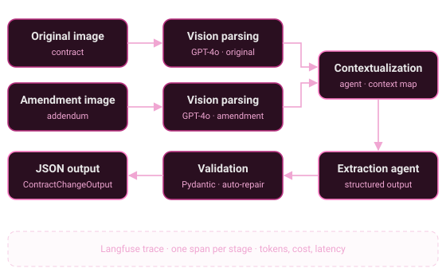

Final project · Multimodal
LegalMove — Contract comparison agent
Takes two images — a contract and its amendment — and returns a validated JSON describing what changed. GPT-4o reads each image, a contextualization agent maps the two documents and an extraction agent isolates every change. The output is checked against a Pydantic schema with automatic repair and retries, and every stage is traced in Langfuse.
- 14 of 15 runs perfect across 5 synthetic pairs, including one with an injected instruction the system flags instead of obeying
- Parsing WER 0.000 on clean pairs and 0.017–0.029 on a degraded scan
- ~11–18 s and ~USD 0.03 per analysis · 87 tests
Python
GPT-4o Vision
LangChain
Pydantic
Langfuse
Pillow
pytest
Synthetic documents. It does not provide legal validation or production-grade reliability.